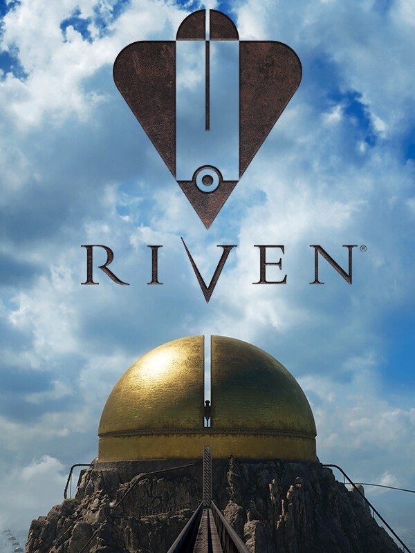

Riven
Riven
Details
|  | |
| Playtime | 10h 51m 0s |
| Last Activity | 2024-07-10 15:34:25 |
| Added | 2024-07-11 10:25:17 |
| Modified | 2025-10-02 9:37:01 |
| Completion Status | Completed |
| Library | Steam |
| Source | Steam |
| Platform | Macintosh PC (Windows) |
| Release Date | 2024-06-25 |
| Community Score | 83 |
| Critic Score | 87 |
| User Score | |
| Genre | Adventure Indie Puzzle |
| Developer | Cyan Worlds |
| Publisher | Cyan Worlds |
| Feature | Single Player |
| Links | Twitch Steam GOG Official Website Wikipedia Discord |
| Tag | 3D Adventure Atmospheric Casual Emotional Exploration First-Person Investigation Logic Multiple Endings Mystery Philosophical Puzzle Realistic Relaxing Singleplayer Story Rich Surreal VR Walking Simulator |
Description

“I know what he’s doing… He’s watching you.”
Travel to Riven, a beautiful and mysterious world on the verge of collapse. Explore this mysterious place, solve its puzzles, reveal its mysteries, make a daring rescue, and escape.
VISIT A MYSTERIOUS WORLD

“I am Gehn. I assume you’ve heard of me.”
Riven takes you on a journey through dense jungles, awe-inspiring caverns, and monolithic structures. Explore a world bent to the whims of a man who sees himself as a god and where every corner will immerse you in an otherworldly adventure.
IMMERSE YOURSELF IN A SURREAL LANDSCAPE

“There’s a great deal of history that you should know…”
Riven rewards careful observation. Challenge Riven’s cunning puzzles, deftly woven throughout its narrative. The environment of Riven will reveal the story of this world as you make meaning from seemingly disparate bits of information and learn everything you need to know about this world.
UNRAVEL RIVEN’S SECRETS

“...it may be time to give this inexplicable mystery a second look.”
Who are the mysterious island dwellers you encounter during your exploration? What purpose does the giant golden dome serve? Why is this world on the verge of collapse? Play Riven and discover the answers to these mysteries- and more.
ABOUT THIS REMAKE

Created by the legendary indie developer Cyan Worlds and based on the smash-hit original released in 1997, Riven has been lovingly revisited by its key original visionaries to expand the epic narrative of the Myst universe.
Experience Riven like never before - with free movement through a real-time 3D environment. This brand-new, re-imagined, and expanded version of Riven offers a deeper story, new captivating visuals, and a journey that stays true to the original release while also expanding on Riven’s breathtaking world.